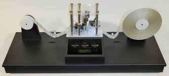

Picture of a young Alan Turing. There is not much known about this picture, although one could assume this was an outfit his father brought back for him to wear from his service in India.

A physical copy of a Turing Machine made by Mike Davey (ordinary person who works in the printing indutry) years after Turing's death.

A non-professional runner who nonetheless is considered world-class by historian's, Turing started running as a means to relieve stress. His personnal best would have netted him 15th at the Olympic's in 1948.

A picture of Turing while he attended Sherbourne. It's said he rode his bike 97km from Southampton to Sherbourne to attend due to the first day of the term coinciding with a Strike.
The British gouvernement plans to make Turing the face of the 50 pound note by the end of the year. The move is also seen as a continued tribute for Turing after his pardon a few years earlier.

A statue made out of slate and created in Turing's likeness in the musuem that now resides in Bletchley Park. The machine in front of him is a german enigma machine, symbolic of his greatest achievement as a codebreaker.
Benidict Cumberbatch played the role of Turing in the film "The Imitation Game". The movie won Best Adapted Screenplay the year it was released (2014) as well as garnering coutless other nominations. Critics however did not enjoy some of the historical inaccuracies, especially the downplay of Turing's homosexuality.

A statue in Manchester dedicated to Turing. Due to its positioning to the city's gay village, his statue serves as a gay tribute just as much as a computing and crytographer one. It is often decorated ethier for celebration's or for funny pictures that can be found on the internet.
Part of the official document of the pardonning of Turing by the Queen in 2013. The document was major step forward for gay right's in Britan and a closing for one of the greastest mind's in history, and who's impact can still be felt in the present day.